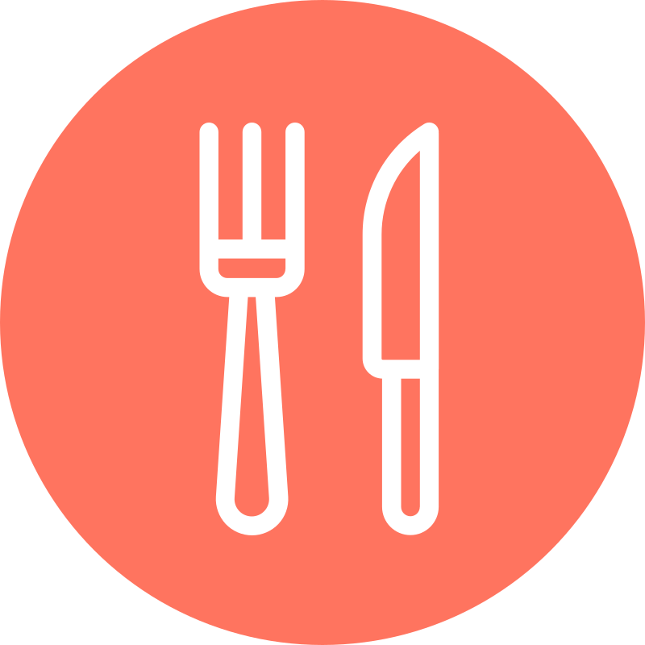
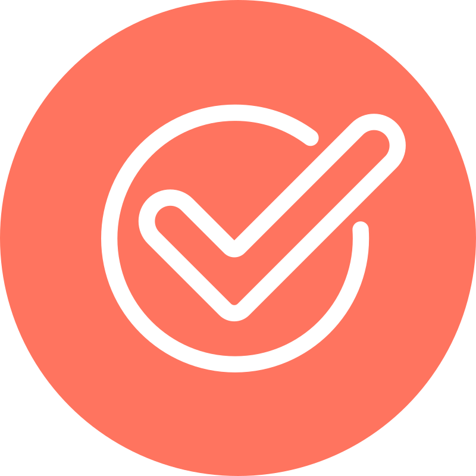
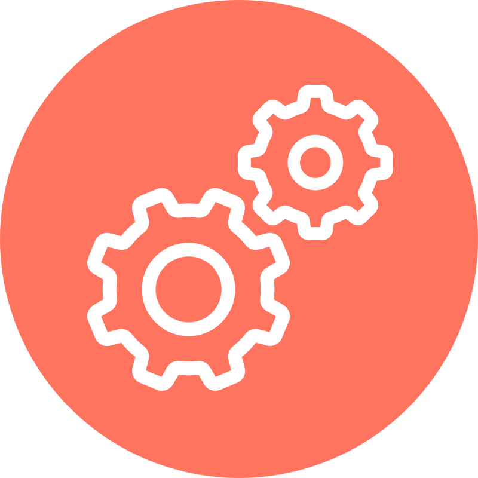
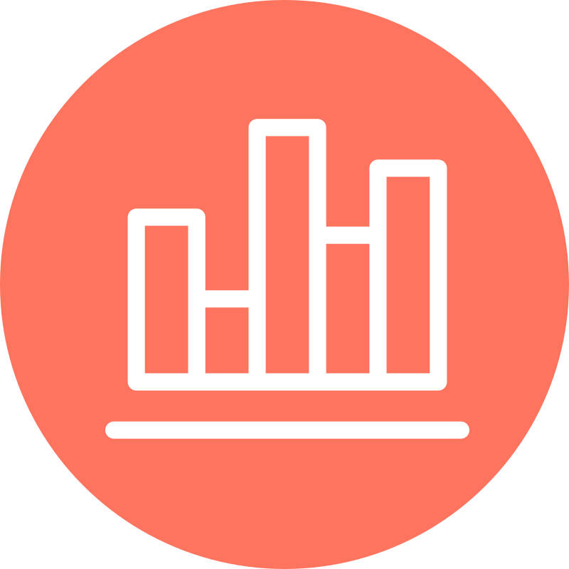

I'm a software engineer based in Nashville. I spend my time building apps with React, Redux, and ES6.
Experience
Software Engineer at Emma
June 2013 - Present
- Collaborated with a team of developers, UX designers, and product managers to estimate work, plan sprints, and discuss project architecture. Other duties included performing code reviews, regression and acceptance testing, organizing releases and deploying code to production.
- Proactively took on the duties of the project manager and scrum master when necessary, in addition to my work as a developer.
- Co-led an internal talk: Intro to JavaScript Unit Testing.
- Performed bug fixes and managed legacy code.
-
Helped with the development of several single page applications. Tasks included:
- Front-end UI development with JavaScript, HTML, and SCSS.
- Creating RESTful web services to save and retrieve data from Cloudant and Emma's API.
- Writing front-end and back-end unit tests.
Education
Middle Tennessee State University
Bachelor's Degree, Computer Science
Graduated December 2013, Magna Cum Laude
Skills
- Javascript
- React
- Redux
- Flux
- Mocha, Sinon
- Grunt
- HTML
- Git, Github
- Scrum
- Webpack
- Backbone
- Marionette
- SCSS/CSS
- Python
- Django
- Flask
- Node
- Redis
- SQL
Personal Projects
-
react-redux-boilerplate
This React/Redux boilerplate (using Grunt, Sass and Webpack) allows for quick project start-up. -
node-chat
This simple example of a local chat app incorporates Node, Socket.io and React. -
 fodmap
This mobile-friendly website provides a searchable list of low and high FODMAP foods using React and Redux.
Work Projects
-
Navigation redesign
July 2016 - Nov 2016
Emma's website redesign includes a new navigation sidebar and improved data grids. Stack: React, Redux, Python, Django. -
Code Your Own (CYO) editor
Jan 2016 - June 2016
Emma's new CYO editor lets customers paste in their own email html, preview the email in several email clients via a Litmus integration, and send the finished mailing. Stack: React, Redux, Python, Flask. -
 Lightbox forms app
Nov 2014 - March 2015
Emma's pop-up forms app helps users design an email sign-up form for use on their website. Stack: Backbone, Marionette, Python, Flask. -
 Automation app
Sept 2014 - Nov 2014
Emma's automation app allows users to set up a series of emails based on an event of their choosing. Stack: Backbone, Marionette, Python, Flask. -
 Response app
April 2014 - Aug 2014
Emma's response app gives customers the details of how their mailings performed. Stack: Backbone, Marionette, Python, Django. -
Social follow block
Dec 2013 - Feb 2014
Emma's social follow block can be dragged into a user's email to highlight their social media accounts. Stack: Backbone, Python, Django.